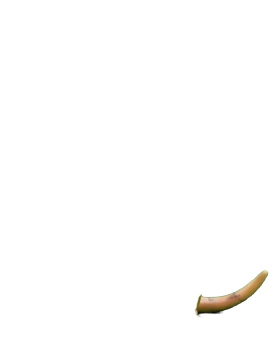
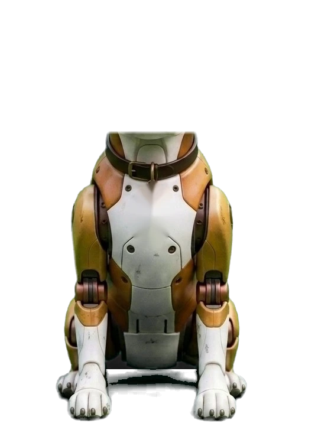
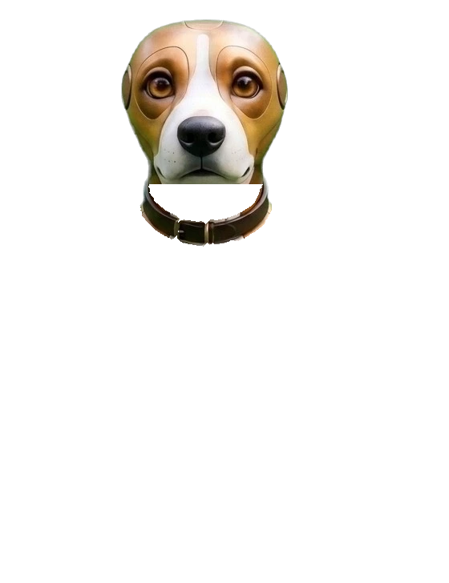
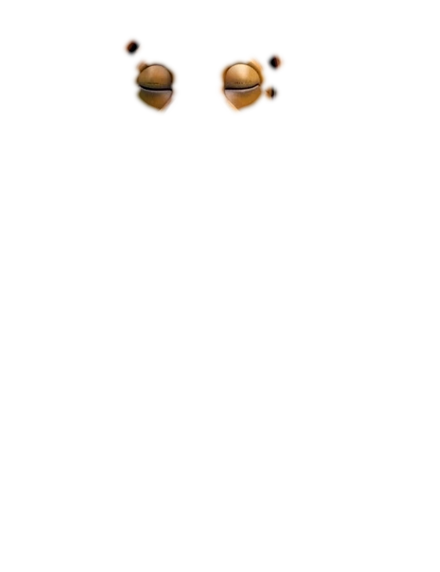
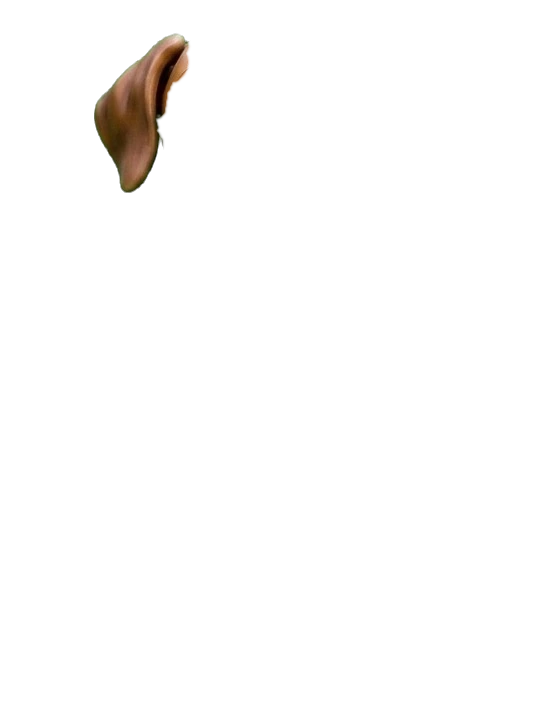
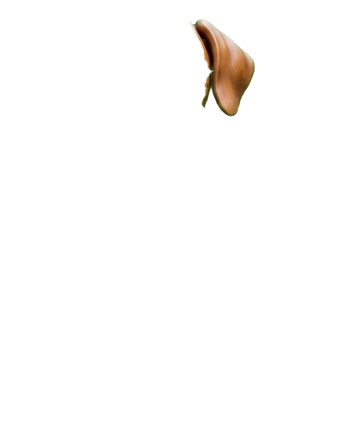
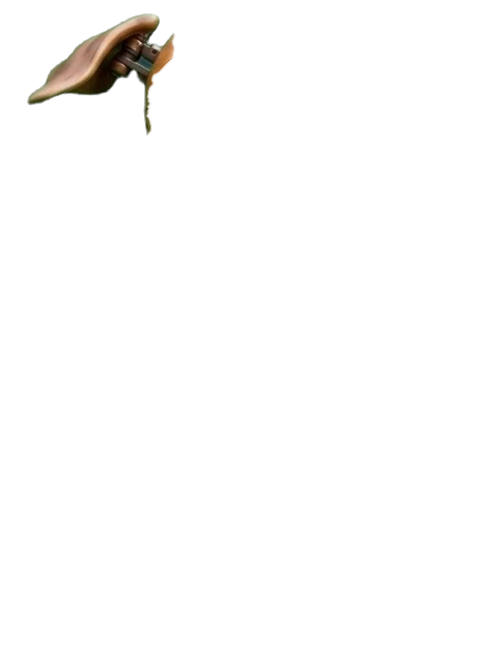
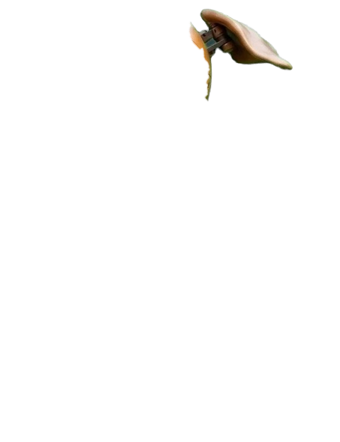
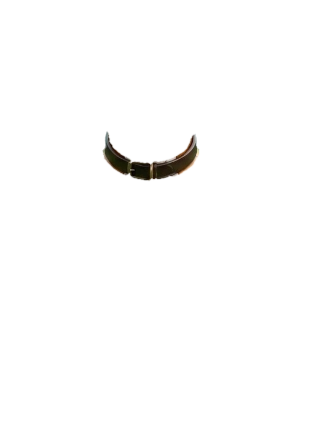

Her parts from Christian's renders, layered the way GlazyArray's and A.L.T.A.'s are: her head tilts on her neck, each ear turns on its own pivot, her tail wags in slow arcs, her eyes glow, and her mouth swaps between her shapes. Not on the site yet.








